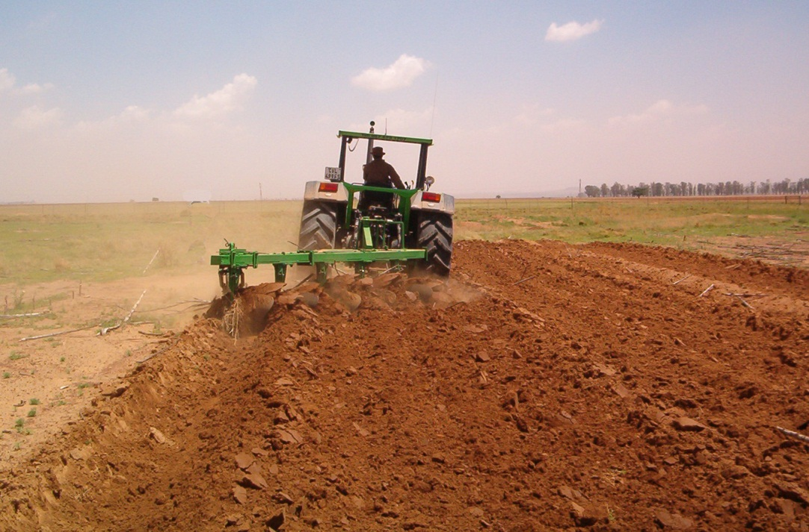
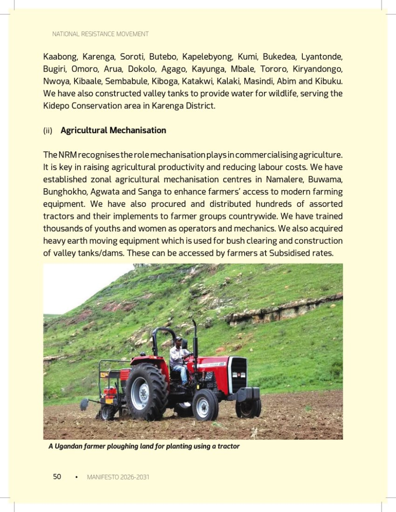
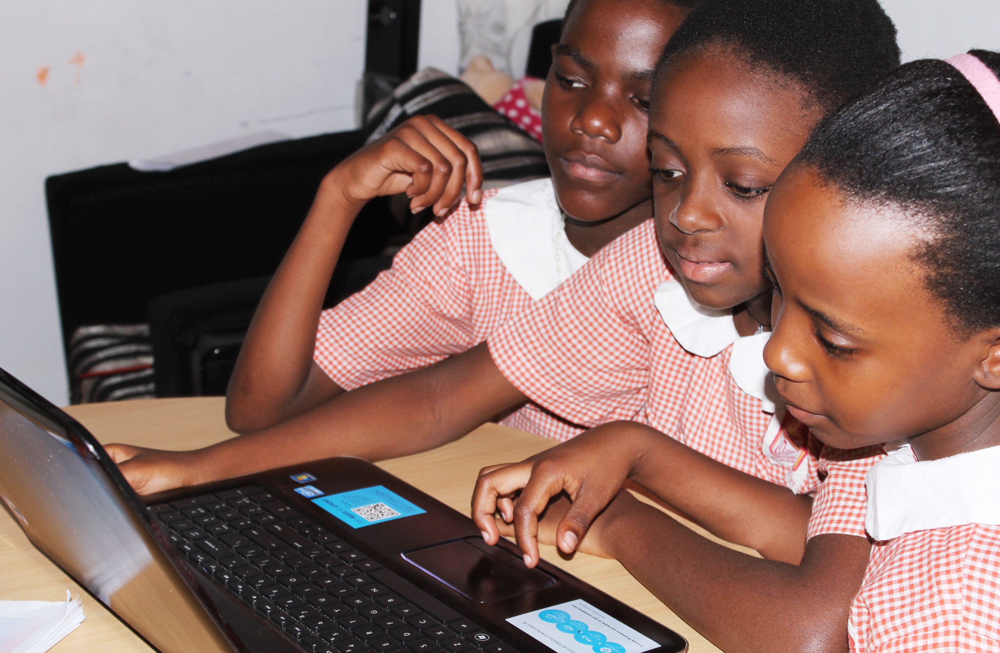
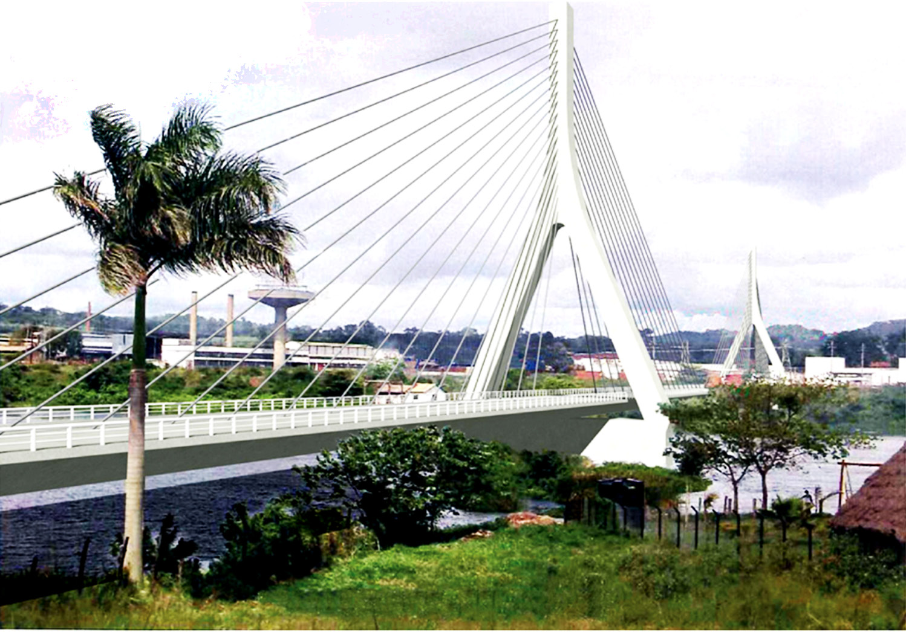

A productive, educated, connected and climate-resilient Budadiri East.
A constituency where every young person, woman, child and vulnerable household can participate in and benefit from inclusive local development.
Outcomes before slogans.
Each pillar defines what success should look like, what interventions belong under it, and what residents should eventually be able to track.

From subsistence to resilient household income.
Prioritise agricultural productivity, coffee and other value chains, enterprise growth, financial inclusion, market access and youth employment.


Learning that leads somewhere.
Strengthen the full pathway from early learning and basic education to skills, TVET, digital capability, tertiary opportunity and employment.
Roads, services and digital access that shorten distance.
Connectivity means transport, electricity, water, mobile coverage, internet access and the ability for residents to reach services and markets.


Protect livelihoods before shocks become crises.
Climate resilience should run through agriculture, roads, water systems, land management and disaster preparedness.
Development must reach the people most easily left out.
The platform should make programmes discoverable by the people they are intended to serve.
Skills + jobs
Training, enterprise support, internships, sports and digital opportunity.
Enterprise + agency
Access to finance, productive assets, markets, health and representation.
Learn + thrive
Education, nutrition, protection and safe environments.
Access + dignity
Clear routes into social support, services and livelihood programmes.
Transparent. Visible. Accountable.
Every pillar should eventually publish verified targets, actions, evidence, location, responsible institution, status and next milestone.
Open the accountability model →